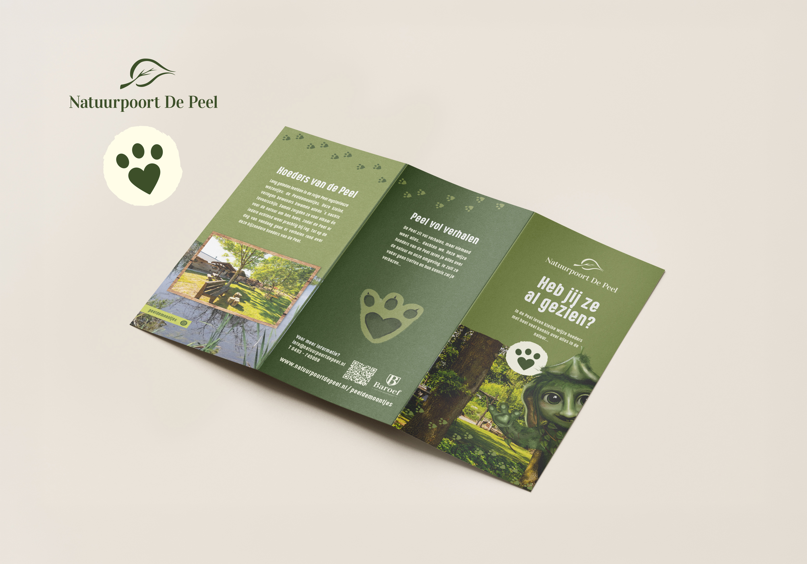
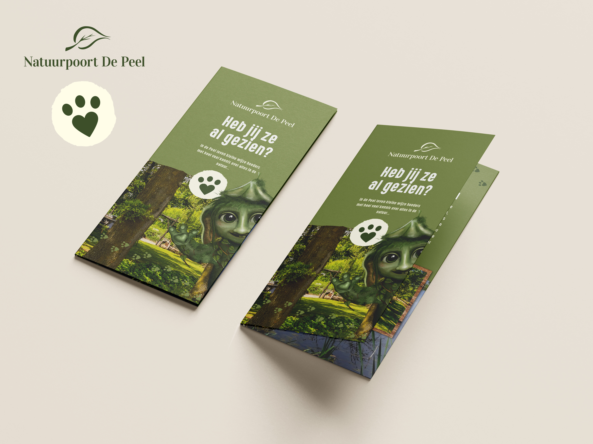
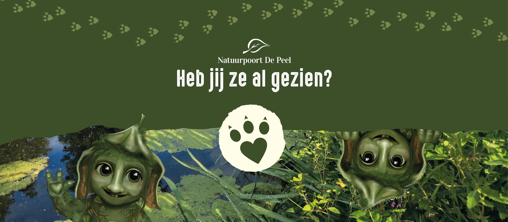
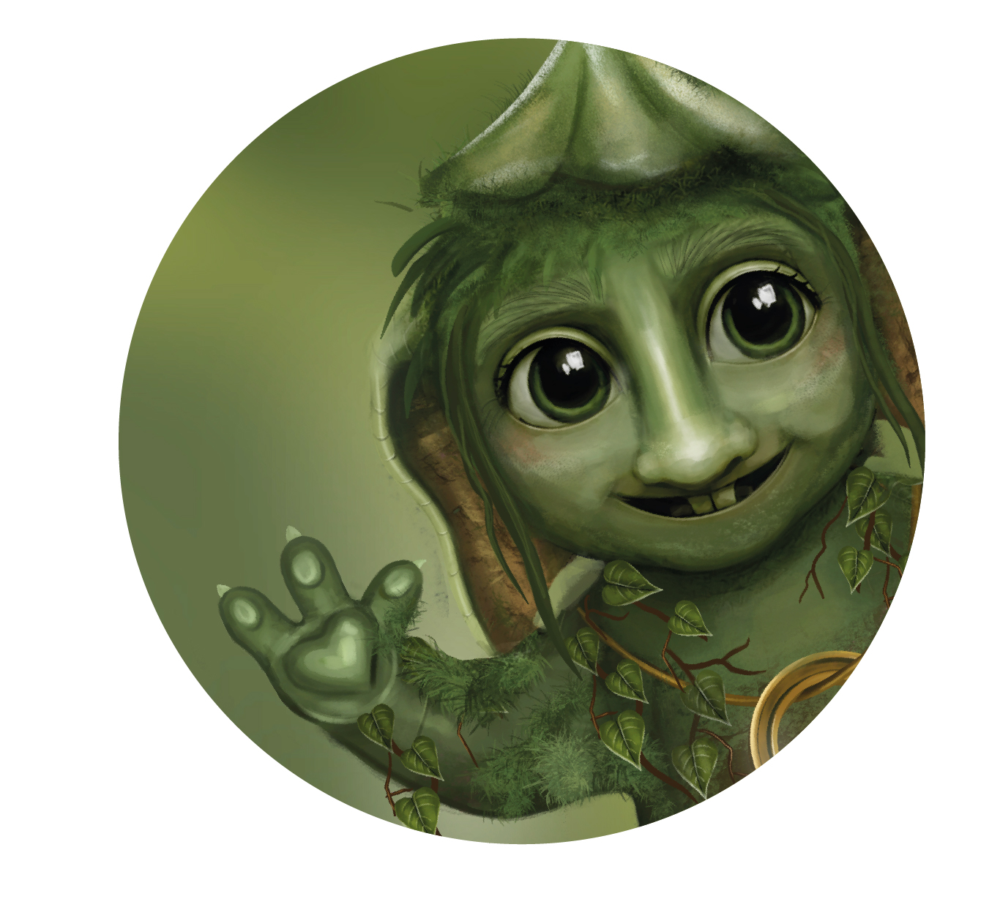

Peeldemoontjes

Work in progress
Dit project voor Natuurpoort de Peel is een opdracht vanuit mijn huidige werk bij Drops en is nog volop in ontwikkeling. Het geïllustreerde Peeldemoontje is het eerste onderdeel van een grotere uitwerking die de komende tijd verder wordt ontwikkeld. Natuurpoort de Peel wil bezoekers, vooral gezinnen en kinderen, op een speelse manier kennis laten maken met de Peel. Het Peeldemoontje krijgt hierin een herkenbare rol en kan uiteindelijk terugkomen in verschillende communicatie-uitingen en toepassingen.
Mijn & uitwerking
Voor de vormgeving gebruikte ik een bestaand beeldje van kunstenaar Leo van Hoek als visueel uitgangspunt. De belangrijkste kenmerken van het beeldje heb ik vertaald naar een illustratief personage: de grote oren en ogen, de lange neus en het groene, mosachtige uiterlijk. Het resultaat is een eerste illustratie van het Peeldemoontje. Vanuit dit ontwerp kan het personage verder worden uitgewerkt in verschillende poses en toepassingen. Ook de verdere communicatie-uitingen rondom het Peeldemoontje worden nog ontwikkeld.


